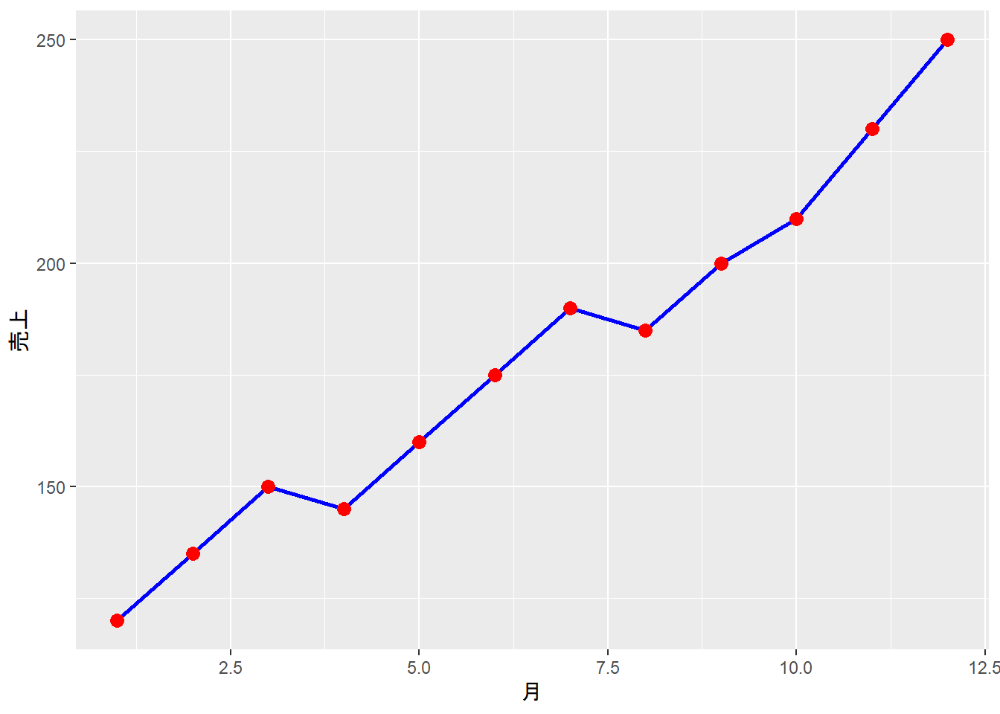
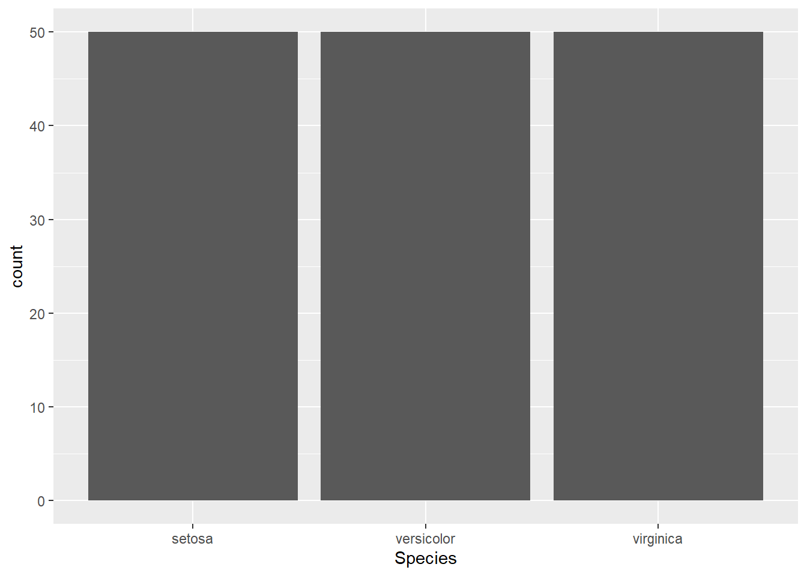
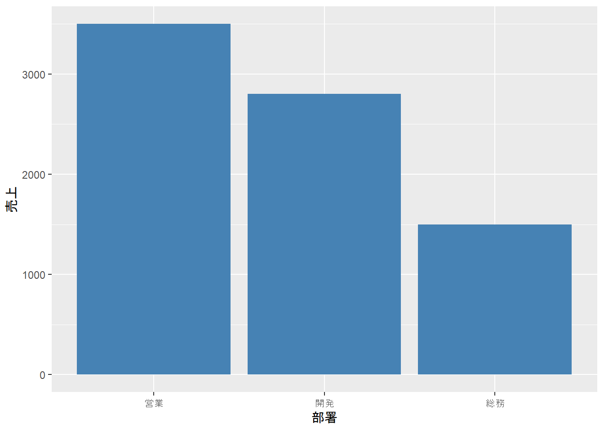
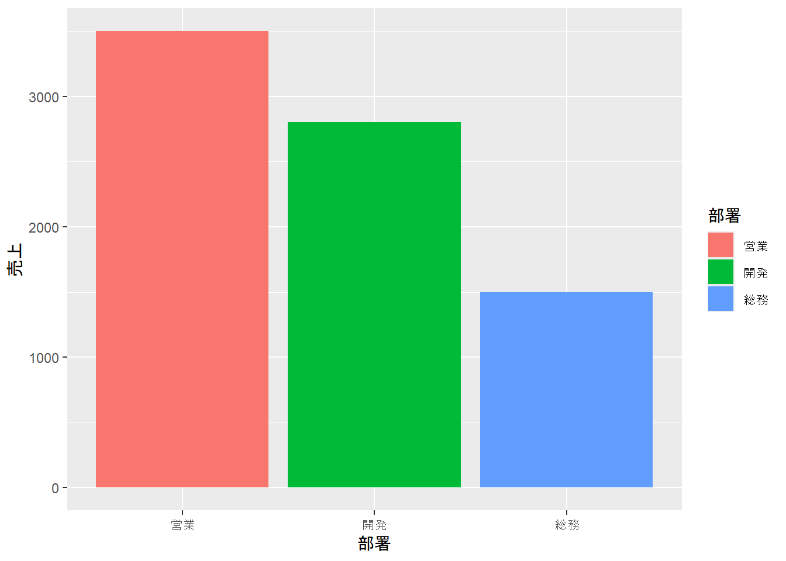

library(tidyverse)
data(iris)
# がく片の長さと幅の関係を散布図で表示
ggplot(data = iris, aes(x = Sepal.Length, y = Sepal.Width)) +
geom_point()
データを数値で見ることも大切ですが、グラフやチャートで視覚化することで、データの特徴やパターンがより明確になります。
Rのggplot2パッケージは、美しく柔軟性の高いグラフを作成するための強力なツールです。この章では、ggplot2の基本を学び、基本的なグラフが作成できるようになります。
この章を読み終えると、以下ができるようになります。
ggplot2は、「Grammar of Graphics」（グラフィックスの文法）という考え方に基づいたパッケージです。
グラフを「データ」「視覚的要素（点、線など）」「座標系」などの部品を組み合わせて作ることで、柔軟で一貫性のある可視化が可能になります。
# tidyverseに含まれています
library(tidyverse)
# またはggplot2だけを読み込む
library(ggplot2)ggplot2でグラフを作る際の基本的な構造は以下の通りです。
ggplot(data = データ, aes(x = x軸の変数, y = y軸の変数)) +
geom_点や線の種類()ggplot(): グラフの土台を作るaes(): Aesthetics（美的要素）の略。どの変数をx軸・y軸などに割り当てるかを指定geom_*(): Geometry（幾何要素）の略。点、線、棒などの表現方法を指定重要なのは+でレイヤーを重ねていくという考え方です。
2つの連続変数の関係を見るには散布図が適しています。
library(tidyverse)
data(iris)
# がく片の長さと幅の関係を散布図で表示
ggplot(data = iris, aes(x = Sepal.Length, y = Sepal.Width)) +
geom_point()
# 点を大きく、赤色に
ggplot(data = iris, aes(x = Sepal.Length, y = Sepal.Width)) +
geom_point(size = 3, color = "red")
点が重なっている場合、透明度を調整すると見やすくなります。
# 透明度を設定（0が完全透明、1が不透明）
ggplot(data = iris, aes(x = Sepal.Length, y = Sepal.Width)) +
geom_point(size = 3, alpha = 0.5)
aes()の中でcolorを指定すると、カテゴリごとに自動で色分けされます。
# 品種ごとに色分け
ggplot(data = iris, aes(x = Sepal.Length, y = Sepal.Width, color = Species)) +
geom_point(size = 3, alpha = 0.7)
時系列データや連続的な変化を表現するには折れ線グラフが適しています。
# 月次売上データを作成
monthly_sales <- data.frame(
月 = 1:12,
売上 = c(120, 135, 150, 145, 160, 175, 190, 185, 200, 210, 230, 250)
)ggplot(data = monthly_sales, aes(x = 月, y = 売上)) +
geom_line()
ggplot(data = monthly_sales, aes(x = 月, y = 売上)) +
geom_line(color = "blue", linewidth = 1) +
geom_point(color = "red", size = 3)
カテゴリごとの値を比較するには棒グラフが適しています。
geom_bar()は自動的にカウントを計算します。
# 品種ごとのデータ数
ggplot(data = iris, aes(x = Species)) +
geom_bar()
既に集計済みのデータの場合はgeom_col()を使います。
# 部署ごとの売上データ
dept_sales <- data.frame(
部署 = c("営業", "開発", "総務"),
売上 = c(3500, 2800, 1500)
)
ggplot(data = dept_sales, aes(x = 部署, y = 売上)) +
geom_col()
ggplot(data = dept_sales, aes(x = 部署, y = 売上)) +
geom_col(fill = "steelblue")
ggplot(data = dept_sales, aes(x = 部署, y = 売上, fill = 部署)) +
geom_col()
データの分布を確認するにはヒストグラムが適しています。
# がく片の長さの分布
ggplot(data = iris, aes(x = Sepal.Length)) +
geom_histogram()
# ビンの数を指定
ggplot(data = iris, aes(x = Sepal.Length)) +
geom_histogram(bins = 20, fill = "lightblue", color = "black")
ggplot(data = iris, aes(x = Sepal.Length, fill = Species)) +
geom_histogram(alpha = 0.5, position = "identity", bins = 20)
labs()関数を使って、グラフにタイトルや軸ラベルを追加できます。
ggplot(data = iris, aes(x = Sepal.Length, y = Sepal.Width, color = Species)) +
geom_point(size = 3, alpha = 0.7) +
labs(
title = "アヤメのがく片の長さと幅",
subtitle = "品種ごとの比較",
x = "がく片の長さ (cm)",
y = "がく片の幅 (cm)",
color = "品種"
)
ggplot2には様々な組み込みテーマがあります。
ggplot(data = iris, aes(x = Sepal.Length, y = Sepal.Width, color = Species)) +
geom_point(size = 3) +
labs(title = "シンプルなテーマ") +
theme_minimal()
ggplot(data = iris, aes(x = Sepal.Length, y = Sepal.Width, color = Species)) +
geom_point(size = 3) +
labs(title = "クラシックなテーマ") +
theme_classic()
theme_bw(): 白黒テーマtheme_dark(): 暗いテーマtheme_light(): 明るいテーマtheme_void(): 軸や背景を削除これまで学んだ要素を組み合わせて、見やすいグラフを作成してみましょう。
# 売上データの作成
sales_data <- data.frame(
月 = rep(1:6, times = 2),
店舗 = rep(c("東京店", "大阪店"), each = 6),
売上 = c(120, 135, 150, 145, 160, 175, # 東京店
100, 115, 130, 140, 155, 170) # 大阪店
)
# 店舗別の月次売上推移
ggplot(data = sales_data, aes(x = 月, y = 売上, color = 店舗)) +
geom_line(linewidth = 1.2) +
geom_point(size = 3) +
labs(
title = "店舗別月次売上推移",
subtitle = "2025年1月〜6月",
x = "月",
y = "売上（万円）",
color = "店舗名"
) +
theme_minimal() +
theme(
plot.title = element_text(size = 16, face = "bold"),
legend.position = "top"
)
作成したグラフはggsave()で保存できます。
# 最後に作成したグラフを保存
ggsave("outputs/sales_plot.png", width = 8, height = 6)
# 特定のグラフを保存
my_plot <- ggplot(iris, aes(x = Sepal.Length, y = Sepal.Width)) +
geom_point()
ggsave("outputs/iris_plot.png", plot = my_plot, width = 8, height = 6)irisデータで、Petal.Length（x軸）とPetal.Width（y軸）の散布図を作成してください。点は品種ごとに色分けしてください。
解答例
ggplot(iris, aes(x = Petal.Length, y = Petal.Width, color = Species)) +
geom_point()以下のデータで棒グラフを作成し、タイトルと軸ラベルを追加してください。
products <- data.frame(
商品名 = c("商品A", "商品B", "商品C", "商品D"),
販売数 = c(150, 230, 180, 210)
)解答例
ggplot(products, aes(x = 商品名, y = 販売数)) +
geom_col(fill = "steelblue") +
labs(
title = "商品別販売数",
x = "商品名",
y = "販売数"
)以下のデータで折れ線グラフを作成し、点も一緒に表示してください。
temperature <- data.frame(
時刻 = c(0, 6, 12, 18, 24),
気温 = c(15, 12, 20, 18, 14)
)解答例
ggplot(temperature, aes(x = 時刻, y = 気温)) +
geom_line(color = "red", linewidth = 1) +
geom_point(size = 3) +
labs(
title = "時刻別気温",
x = "時刻",
y = "気温（℃）"
)この章では、ggplot2の基本を学びました。
ggplot() + aes() + geom_*()）geom_point()）geom_line()）geom_bar(), geom_col()）geom_histogram()）labs()）theme_*()）これで基本的なグラフが作成できるようになりました。次の章では、さらに高度なカスタマイズ方法を学びます。
次の章「データ可視化応用 - ggplot2発展」では、以下を学びます。
より洗練されたグラフ作成スキルを身につけましょう。